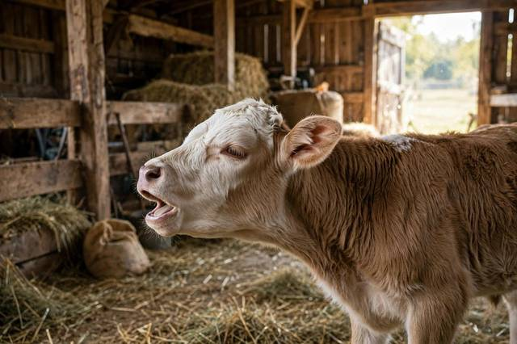
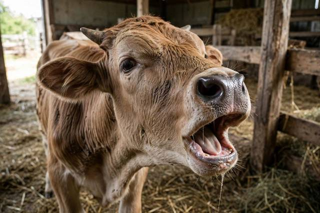
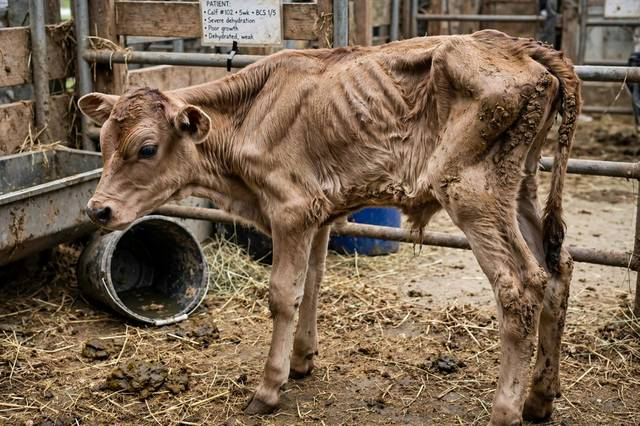

Calf pneumonia is a respiratory disease complex involving viruses, bacteria, environmental stress and management factors. It can impair growth and cause long-term lung damage.
This guide covers clinical signs, causes, diagnosis, treatment principles and prevention.
Clinical Signs
1
Fever(High body temperature)
2
Cough(Repeated coughing)
3
Nasal discharge(Runny nose)
4
Rapid or laboured breathing(Fast, difficult breathing)
5
Reduced appetite(Eats and drinks less)
6
Drooping ears(Ears hang low and dull)
7
Poor growth(Grows more slowly than normal)
8
Open-mouth breathing(Breathing with the mouth open)
9
Reluctance to move(Unwilling to walk or stand)
Fever

CoughNasal discharge

Rapid or laboured breathingReduced appetite

Drooping earsPoor growthOpen-mouth breathingReluctance to move
Causes and Transmission
Risk factors include poor ventilation, overcrowding, mixing age groups, transport stress, inadequate colostrum and exposure to respiratory pathogens.
Pathogenesis
Pneumonia in calves usually begins when stress — weaning, transport, cold, damp housing or overcrowding — weakens the calf's respiratory defences. Viruses such as RSV, PI-3 and IBR damage the airways, allowing bacteria — especially Pasteurella multocida and Mannheimia haemolytica — to colonise the lungs.
The infection causes inflammation and fluid in the air sacs, reducing oxygen exchange. The calf coughs, breathes rapidly, develops fever and eats less; severe cases progress to laboured breathing and death.
Veterinary Diagnosis
Diagnosis combines examination, temperature, lung auscultation and herd history. Ultrasound, blood tests or pathogen testing may help in selected outbreaks.
Differential Diagnosis
Several conditions can look similar. A veterinarian distinguishes them by the signs, history and laboratory findings:
Lungworm infection — causes coughing in grazing calves, usually without fever.
Aspiration pneumonia — follows faulty drenching or milk entering the airways, with sudden onset.
Treatment and Case Management
Early veterinary assessment helps determine whether antimicrobials are indicated. Treatment may include veterinarian-selected medicines, anti-inflammatory care and supportive management. Do not use leftover antibiotics or stop a prescribed course without advice.
When to seek urgent help: Laboured breathing, blue or grey mucous membranes, high fever or a calf that stops drinking needs urgent care.
Recommended Medicines
1
Antibiotic – Tulathromycin(For bacterial pneumonia in calves)2.5 mg/kg SC single dose
2
Antibiotic – Florfenicol(For bacterial pneumonia in calves)20 mg/kg IM every 48 h
3
Antibiotic – Ceftiofur(For bacterial pneumonia in calves)1.1–2.2 mg/kg IM daily
4
NSAID – Meloxicam(For fever and pain)0.5 mg/kg IV/SC once
⚠ Important Tips:
Treat calf pneumonia early — call the vet at the first cough or fever.
Never use leftover antibiotics or stop a prescribed course early.
Use antibiotics only under veterinary advice.
Keep sick calves in dry, draught-free housing with fresh air.
Where several antibiotics are listed, the veterinarian chooses ONE — never use them all together.
Injection — vet-administered onlyMedicines — only as prescribed by a veterinarian
Prevention and Herd Management
Improve ventilation without draughts, reduce stocking density, avoid mixing age groups, ensure colostrum management, reduce transport stress and follow a herd vaccination plan where appropriate.
Frequently Asked Questions
What are the symptoms of pneumonia in calves?
Fever, cough, nasal discharge, rapid or laboured breathing, reduced appetite, drooping ears and poor growth. Severe cases may show open-mouth breathing or reluctance to move.
What causes pneumonia in calves?
Calf pneumonia is a respiratory disease complex involving viruses, bacteria, environmental stress and management factors. Risk factors include poor ventilation, overcrowding, mixing age groups, transport stress and inadequate colostrum.
How is pneumonia in calves diagnosed?
Diagnosis combines examination, temperature, lung auscultation and herd history. Ultrasound, blood tests or pathogen testing may help in selected outbreaks.
How is pneumonia in calves treated?
Early veterinary assessment helps determine whether antimicrobials are indicated. Treatment may include veterinarian-selected medicines, anti-inflammatory care and supportive management. Do not use leftover antibiotics or stop a prescribed course without advice.
How can pneumonia in calves be prevented?
Improve ventilation without draughts, reduce stocking density, avoid mixing age groups, ensure good colostrum management, reduce transport stress and follow a herd vaccination plan where appropriate.
How to treat pneumonia in calves?
Early veterinary assessment helps determine whether antimicrobials are indicated. Treatment may include veterinarian-selected medicines, anti-inflammatory care and supportive management, so always consult a veterinarian.
Why is my calf coughing?
Coughing in calves can be a sign of pneumonia, along with fever, nasal discharge and rapid or laboured breathing. Poor ventilation, overcrowding, mixing age groups and transport stress increase the risk.
بچھڑے کو نمونیا ہو جائے تو کیا کریں؟
بخار، کھانسی، ناک سے پانی بہنا اور تیز سانس نمونیا کی علامات ہیں۔ جلد ویٹرنری ڈاکٹر سے معائنہ کروائیں، کیونکہ علاج کا فیصلہ ڈاکٹر کرتا ہے۔ بچی ہوئی اینٹی بایوٹک خود سے نہ دیں اور ہوا دار صاف جگہ رکھیں۔
Key Takeaway
Early recognition, accurate diagnosis, responsible veterinary care and herd-level prevention are central to managing this condition. Follow current local veterinary authority guidance and medicine labels.
Radostits, O.M., Gay, C.C., Hinchcliff, K.W., Constable, P.D. Veterinary Medicine: A Textbook of the Diseases of Cattle, Horses, Sheep, Pigs and Goats.
FAO animal health manuals. Food and Agriculture Organization of the United Nations.
✍️ Written by Dr. Shahid Bilal Depal, DVM (PVMC RVMP #15068)
This guide is for educational purposes. Consult a registered veterinarian for diagnosis and treatment.